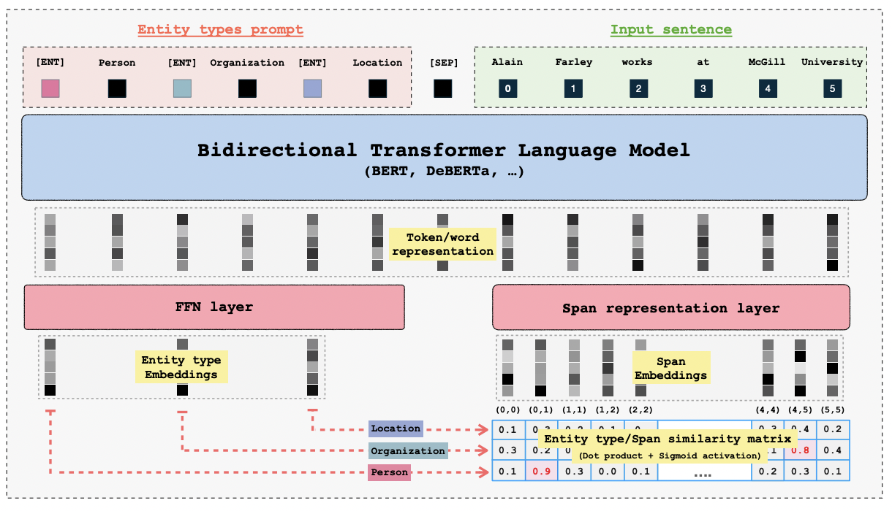

Installation¶
To begin using the GLiNER model, you can install the GLiNER Python library through pip, conda, or directly from the source.
Install via Pip¶
pip install gliner
:::tip[ONNX runtime]
If you intend to use the GPU-backed ONNX runtime, install GLiNER with the GPU feature. This also installs the onnxruntime-gpu dependency.
:::
pip install gliner[gpu]
Install via Conda¶
conda install -c conda-forge gliner
Install from Source¶
To install the GLiNER library from source, follow these steps:
Clone the Repository:
First, clone the GLiNER repository from GitHub:
git clone https://github.com/urchade/GLiNERNavigate to the Project Directory:
Change to the directory containing the cloned repository:
cd GLiNERInstall Dependencies: :::tip It’s a good practice to create and activate a virtual environment before installing dependencies: :::
python -m venv venv source venv/bin/activate # On Windows use: venv\Scripts\activate
Install the required dependencies listed in the
requirements.txtfile:pip install -r requirements.txtInstall the GLiNER Package:
Finally, install the GLiNER package using the setup script:
pip install .Verify Installation:
You can verify the installation by importing the library in a Python script:
import gliner print(gliner.__version__)
Install FlashDeBERTa¶
Most GLiNER models use the DeBERTa encoder as their backbone. This architecture offers strong token classification performance and typically requires less data to achieve good results. However, a major drawback has been its slower inference speed, and until recently, there was no flash attention implementation compatible with DeBERTa’s disentangled attention mechanism.
To address this, FlashDeBERTa was introduced.
To use FlashDeBERTa with GLiNER, install it:
pip install flashdeberta -U
:::tip
Before using FlashDeBERTa, please make sure that you have transformers>=4.47.0.
:::
GLiNER will automatically detect and use FlashDeBERTa. If needed, you can switch to the standard eager attention mechanism by specifying the attention implementation:
model = GLiNER.from_pretrained("urchade/gliner_mediumv2.1", _attn_implementation="eager")
FlashDeBERTa provides up to a 3× speed boost for typical sequence lengths—and even greater improvements for longer sequences.
